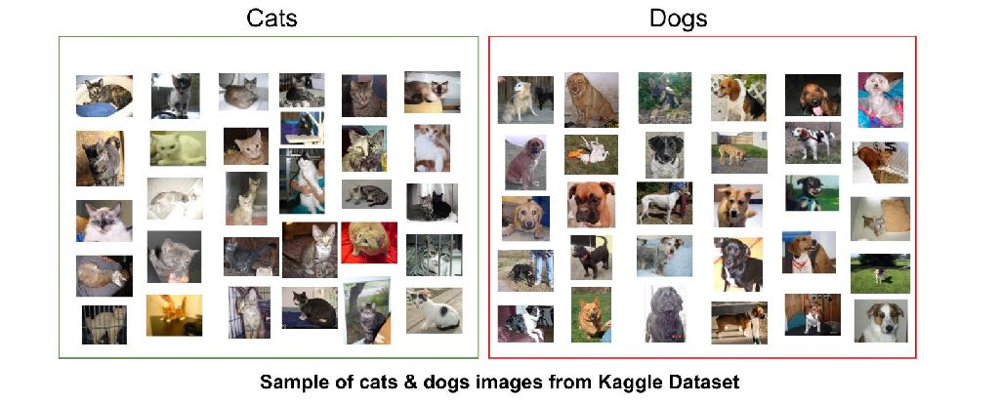
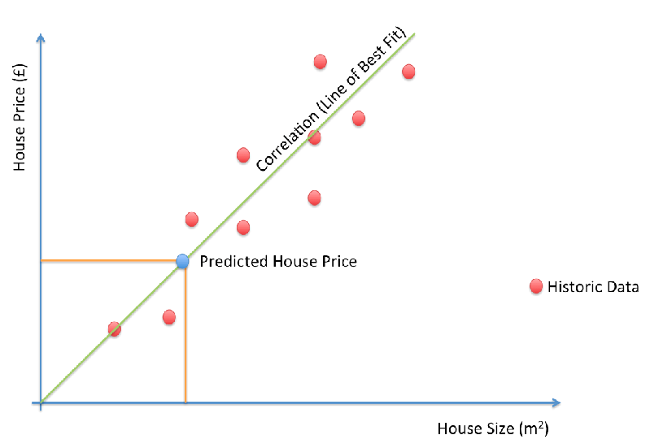
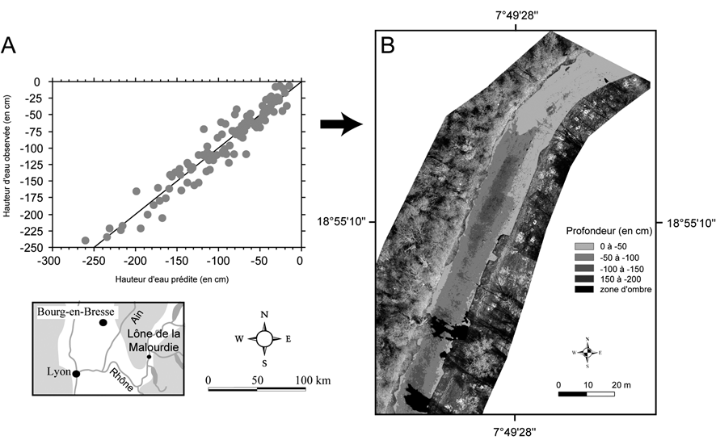
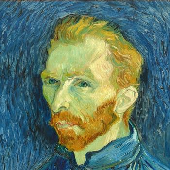
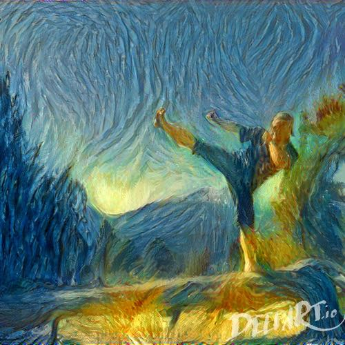
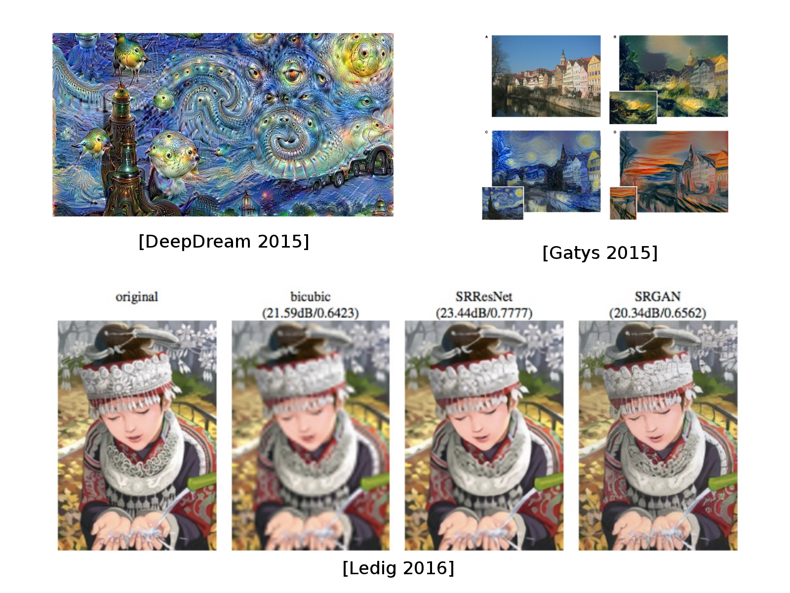

class: center, middle <!-----========================================================================================--------------> # Introduction au Deep Learning pour la Télédétection ### Rémy Courdier <p id="last-updated">Dernière mise à jour : </p> .affiliations[ ] .footer[Avec des slides de Evann Courdier, Charles Ollion et Olivier Grisel <BR>(EPFL, INRIA) ] <!-----------------------------------------------------------------------------------------------------------> --- # Plan du cours ### En théorie... - Présentation Générale Machine Learning et Deep Learning - .grey[Aspects theoriques du Machine learning et Deep Laerning<br> (modèles et architectures,…)] - .grey[Introduction aux réseaux neuronaux convolutionnels] -- count:false ### En pratique... .grey[ - TP : Classification d’images satellitaires - TP : Object detection / counting ] <!-----------------------------------------------------------------------------------------------------------> --- # Machine Learning (ML) .center[Le ML.note[(1)] est un domaine de l'intelligence artificielle qui consiste à développer des algorithmes capables d'apprendre à partir de données dans le but de résoudre une grande variété de problèmes et prendre des décisions.] ### Principe : - apprentissage à partir des données plutôt que programmer explicitement un code pour résoudre un problème. - contruction d'algorithmes **génériques**.note[(2)] qui peuvent identifier des informations interéssantes sur nos données.note[(3)]. - pas d'écriture de codes particuliers pour différents problèmes.note[(4).] - construction de l'algorithme qui génère la logique en se basant sur les données.note[(5).] <button onclick="alert( '(1) Le Machine Learning permet aux ordinateurs d\'apprendre à partir des données plutôt que d\'être explicitement programmés, ce qui les rend capables de résoudre une grande variété de problèmes et de prendre des décisions informées en se basant sur les données disponibles. C\'est une approche puissante pour l\'automatisation de tâches complexes et l\'analyse de données à grande échelle." >1</button> <button onclick="alert( '(2) Cela signifie que les algorithmes de Machine Learning sont conçus pour être applicables à un large éventail de problèmes et de domaines. Au lieu de créer un algorithme spécifique pour chaque problème, on crée des algorithmes génériques qui peuvent être adaptés à différentes tâches." >2</button> <button onclick="alert( '(3) Les algorithmes de Machine Learning sont utilisés pour extraire des informations, des tendances ou des modèles à partir des données. Ils peuvent révéler des relations cachées ou des insights que l\'analyse manuelle des données ne pourrait pas découvrir." >3</button> <button onclick="alert( '(4) Dans le Machine Learning, les données jouent un rôle central. Au lieu de programmer explicitement des règles, des décisions ou des prédictions, on fournit des données à l\'algorithme, et ce dernier apprend à partir de ces données pour effectuer la tâche souhaitée." >4</button> <button onclick="alert( '(5) L\'algorithme de Machine Learning apprend à partir des données en identifiant des schémas et des règles à partir de ces données. Il construit sa propre logique interne en se basant sur les informations contenues dans les données." >5</button> ??? Machine Learning Le Machine Learning permet aux ordinateurs d'apprendre à partir des données plutôt que d'être explicitement programmés, ce qui les rend capables de résoudre une grande variété de problèmes et de prendre des décisions informées en se basant sur les données disponibles. C'est une approche puissante pour l'automatisation de tâches complexes et l'analyse de données à grande échelle. * "Machine Learning" : Le Machine Learning est un domaine de l'intelligence artificielle qui consiste à développer des algorithmes capables d'apprendre à partir de données et de prendre des décisions ou de faire des prédictions en se basant sur ces données. * "On construit des algorithmes génériques" : Cela signifie que les algorithmes de Machine Learning sont conçus pour être applicables à un large éventail de problèmes et de domaines. Au lieu de créer un algorithme spécifique pour chaque problème, on crée des algorithmes génériques qui peuvent être adaptés à différentes tâches. * "Qui peuvent nous dire des choses intéressantes sur nos données" : Les algorithmes de Machine Learning sont utilisés pour extraire des informations, des tendances ou des modèles à partir des données. Ils peuvent révéler des relations cachées ou des insights que l'analyse manuelle des données ne pourrait pas découvrir. * "On n'a pas besoin d'écrire du code particulier pour différents problèmes" : Contrairement à la programmation traditionnelle où chaque tâche nécessite la rédaction de code spécifique, le Machine Learning permet d'utiliser le même algorithme de base pour résoudre différents problèmes en ajustant simplement les données d'entrée. * "Au lieu d'écrire du code, on met des données dans l'algorithme" : Dans le Machine Learning, les données jouent un rôle central. Au lieu de programmer explicitement des règles, des décisions ou des prédictions, on fournit des données à l'algorithme, et ce dernier apprend à partir de ces données pour effectuer la tâche souhaitée. * "C'est lui qui construit la logique en se basant sur les données" : L'algorithme de Machine Learning apprend à partir des données en identifiant des schémas et des règles à partir de ces données. Il construit sa propre logique interne en se basant sur les informations contenues dans les données. <!-----------------------------------------------------------------------------------------------------------> --- layout:true # Machine Learning traditionnel --- .left-column[ ### Supervisé : - Classification - Régression .grey[### Non supervisé : - Clustering - Modèles génératifs ]] .right-column[ .right[<img src="images/rc-intro/fig_apprentssage_supervise.png" style="width: 110%;" />] ] ??? ML traditionnel - Classification Ces deux grandes classes de Machine Learning ont des applications variées dans de nombreux domaines Dans le domaine de l'analyse d'images, les performances des réseaux de neurones sont spectaculaires, tant pour identifier le contenu d'une photographie que pour le localiser des objets d'intérêt. Néanmoins, l'entraînement d'un réseau de neurones requiert la présence d'une vérité terrain. Concrètement, pour chaque image d'entraînement il nous faut un exemple de résultat attendu. Le réseau de neurones analyse les données qui lui sont fournies et propose une classification de ces dernières. La vérité terrain permet de calculer l'erreur commise par le réseau de neurones, qui peut alors se mettre à jour pour produire une classification davantage pertinente. Le processus est répété jusqu'à ce que l'apprentissage ne s'accompagne plus d'une diminution de l'erreur commise. Ainsi, si nous souhaitons entraîner un réseau de neurones à caractériser des types de paysages en fonction de photographies aériennes il est indispensable de créer un jeu de données où les images sont associées à un ou plusieurs types de paysages. La création de cette vérité terrain nécessite une expertise, pour concevoir une taxonomie de paysage pertinente comme pour associer chaque photographie aérienne à une ou plusieurs catégories de cette taxonomie. --- count:false .left-column[ ### Supervisé : - Classification - Régression ### Non supervisé : - Clustering - Modèles génératifs ] .right-column[ <br><br><br><br><br><br> .right[<img src="images/rc-intro/fig_apprentissage_non supervise.png" style="width: 110%;" />] ] ??? Les méthodes d'apprentissage non-supervisé, se libèrent de la contrainte de la vérité terrain. Pour ces méthodes la phase d'apprentissage consiste à analyser les propriétés des données les unes par rapport aux autres. Il peut s'agir de la distance entre les données, d'un calcul de densité ou de rechercher une les paramètres d'une loi de probabilité spécifique représentant au mieux les données. Les données d'apprentissage fournissent ainsi une base pour mieux comprendre les futures données. Dans cette catégorie de méthode, les algorithmes de clustering (en français «regroupement») fournissent des solutions pour organiser les données en ensembles homogènes. Les groupes sont constitués durant les apprentissage, en associant les données similaires. Une fois l'apprentissage terminé, de nouvelles données peuvent être associées aux groupes ainsi créés. En supervisé, on a un objectif particulier à prédire, par exemple dans la cas de la classif, etant donné une image en entrée, dire si c'est ... En non supervisé, il n'y a pas d'objectif. On veut que l'algorithme trouve des tendances, des motifs dans les données. --- layout:false # ML traditionnel - Classification .center[] ??? Le Machine Learning supervisé en classification consiste à attribuer une étiquette ou une classe à des exemples en fonction de caractéristiques d'entrée. Par exemple, catégoriser des animaux comme « chat » ou « chien » en fonction de leur contenu ou qu’un terrain est de la « foret » ou de la « culture ». -- count:false .center[] .center[.big[?]] <!-----------------------------------------------------------------------------------------------------------> --- ## ML - Classification et Télédétection .mmmedium[Algorithme de "classification au plus proche voisin" largement répandu dans le monde de la télédétection. Technique qui repose sur une digitalisation manuelle de régions d’entraînement.<BR> Pour chaque zone d’entraînement appelées **Region Of Interest (ROI)**, les valeurs des pixels sous-jacents sont relevées, les moyennes sont calculées, et chaque classe est ainsi caractérisée par une signature radiométrique. On associe alors à chaque pixel d'une l’image, la classe qui lui est le plus proche d’un point de vue radiométrique.] .center[ <img src="images/rc-intro/fig_classif_dist_min_bandes - Grande.png" style="width: 90%;" /><br> .credits[Paul Passy (2017) - https://www.ppassy.fr/teledetection/2017/03/20/la-classification-au-plus-proche-voisin/] ] <!-----------------------------------------------------------------------------------------------------------> --- # ML traditionnel - Régression .center[  ] ??? Technique d’apprentissage automatique où un modèle est entraîné à prédire une valeur continue en fonction de données d’entrée. Par exemple, prédire le prix d'une terrain en fonction de ses caractéristiques, ou estimer la demande future d'un produit en fonction de facteurs tels que le prix et les risques naturels. Voici les étapes principales : 1. Entraînement sur des données étiquetées : On fournit au modèle un ensemble de données d’entraînement contenant des paires d’entrées et de sorties connues. Par exemple, pour prédire le prix d’une maison, les données d’entrée peuvent inclure la surface et l’emplacement, et la sortie, le prix. 2. Minimisation de l’erreur : Le modèle ajuste ses paramètres pour minimiser l’écart (erreur) entre ses prédictions et les valeurs réelles des données d’entraînement. 3. Prédiction sur de nouvelles données : Une fois entraîné, le modèle peut être utilisé pour prédire des valeurs continues pour de nouvelles données d’entrée. La régression supervisée est utilisée dans de nombreux domaines, - comme la finance (prévision de prix), - la santé (prédiction de progression d’une maladie) - la météorologie (prédiction des températures). <!-----------------------------------------------------------------------------------------------------------> --- exclude:true ## ML - Régression et Télédétection .mmmedium[Algorithme ...] .center[  ] .credits[source : Jérôme Lejot, Hervé Piégay, Peter David. Hunter, Bertrand Moulin et Mathieu Gagnage (2013) - https://doi.org/10.4000/geomorphologie.9362] ??? page exclue du diaporama <!-----------------------------------------------------------------------------------------------------------> --- # ML traditionnel - Clustering .center[<img src="images/init/clustering.png" style="width: 100%;"/>] ??? Clustering : Le clustering dans le Machine Learning non supervisé consiste à regrouper des exemples de données en fonction de similarités. Les exemples similaires sont placés dans le même groupe (cluster). Par exemple, regrouper des clients en segments de marché en fonction de leurs comportements d'achat similaires ou comme ici regrouper des images de chiffres en fonction de leur forme. <!-----------------------------------------------------------------------------------------------------------> --- # ML traditionnel - Modèles génératifs .center[ <span class="big" style="position:relative;bottom:80px;margin: 0 50px;">+</span> ] -- count:false .center[] <!-----------------------------------------------------------------------------------------------------------> --- count:false ## ML traditionnel - Modèles génératifs .center[] ??? Les modèles génératifs sont utilisés pour générer de nouvelles données qui ressemblent à celles du jeu de données d'entraînement. Ils sont utiles pour créer de nouvelles images, du texte, ou d'autres types de données. Par exemple, générer des visages humains réalistes à partir d'un ensemble d'images existantes. Comme ici avec le portrait de Vincent Van Gogh. <!-----------------------------------------------------------------------------------------------------------> --- # Machine Learning traditionnel .center[<img src="images/init/image_ml.png" style="width: 670px;" />] -- .center[<img src="images/init/image_ml_2.png" style="width: 670px;" />] <!-----------------------------------------------------------------------------------------------------------> --- # Vers le Deep Learning ... - Réseaux de Neurones, avec un grand nombre de couches/modules. ??? Sous le mot deep learning, on regroupe un ensemble de modèles qui ont des propriétés communes -- count:false - Construit une représentation des données hierarchique et abstraite. ??? * abstraite: image => vecteur * non-linéaire: X entrée, Y sortie mais 2X entrée, pas 2Y en sortie (c'est la non linéarité qui les rend puissants, on cherche à modeliser un monde non linéaire !) * hierarchique: ex. reseau convolutionnel -- count:false - Modèles flexibles en terme de type et taille d'entrée et sortie ??? ex: entrée = age, region, salaire => sortie = nb enfant, taille maison, type de magasin ou il va image, son, texte -- count:false - Programmation fonctionnelle différentiable .center[<img src="images/init/image_dl.png" style="width: 100%;" />] ??? On va voir plus tard ce que ca veut dire concretement, mais vous pouvez retenir que c'est cette propriété qui nous permet d'entrainer le réseau automatiquement <!-----------------------------------------------------------------------------------------------------------> --- layout:true # Pourquoi maintenant ? --- - Une meilleure compréhension des algorithmes - .grey[Puissance de calcul (GPUs, TPUs, ...)] - .grey[Données labelisées] - .grey[Outils et modèles open-source] ??? 1. Une meilleure compréhension des algorithmes : Les avancées en théorie et en architecture de réseaux de neurones (comme les réseaux convolutifs ou récurrents) ont permis de concevoir des modèles plus performants et adaptés aux tâches complexes, favorisant ainsi leur adoption. 2. Puissance de calcul (GPUs, TPUs, …) : Les processeurs spécialisés comme les GPUs et TPUs sont conçus pour le calcul parallèle massif, essentiel pour entraîner rapidement des modèles de Deep Learning complexes, qui nécessitent d’énormes capacités de traitement. 3. Données labellisées : Le Deep Learning requiert de grandes quantités de données pour apprendre efficacement. Avec l’essor du Big Data et des jeux de données massifs et labellisés, les réseaux de neurones peuvent désormais apprendre à haut niveau de précision. 4. Outils et modèles open-source : Des bibliothèques comme TensorFlow, PyTorch et des modèles pré-entraînés en open source rendent le Deep Learning accessible à un large public, permettant aux chercheurs et ingénieurs de développer et partager des solutions innovantes plus facilement. Les GPU (Graphical Processing Units) et TPU (Tensor Processing Units) sont deux types de processeurs spécialisés utilisés pour accélérer le Deep Learning, mais ils sont conçus avec des objectifs légèrement différents. Initialement conçus pour le rendu graphique, les GPUs sont utilisés dans le Deep Learning en raison de leur capacité à effectuer des calculs parallèles massifs, ils offrent une solution puissante et flexible car ils sont très polyvalents et compatibles avec de nombreux frameworks de Deep Learning. Les TPUs, Conçus spécifiquement par Google pour l’IA, sont idéaux pour les modèles de Deep Learning à grande échelle nécessitant des performances optimisées et une consommation d’énergie réduite, surtout dans un environnement TensorFlow. --- <!-----------------------------------------------------> - Une meilleure compréhension des algorithmes - Puissance de calcul (GPUs, TPUs, ...) - .grey[Données labelisées] - .grey[Outils et modèles open-source] .center[ <img src="images/init/gpu_tpu.png" style="width: 450px;" /><br/><br/> <small>_GPU et TPU_</small> ] ??? GPU et TPU Un GPU (Unité de Traitement Graphique) et un TPU (Unité de Traitement Tensoriel) sont des types de processeurs spécialisés utilisés dans le domaine de l'informatique, en particulier pour des tâches liées au traitement de données massives et à l'accélération de calculs. Voici une explication de chacun d'entre eux : GPU (Unité de Traitement Graphique) : * Fonction principale : Les GPU ont été initialement conçus pour le rendu graphique, c'est-à-dire pour afficher des images et des graphiques complexes sur un écran. Ils sont utilisés dans les cartes graphiques des ordinateurs personnels et des stations de travail pour des tâches telles que les jeux vidéo, la modélisation 3D, la conception graphique et le rendu vidéo. * Calculs parallèles : Les GPU sont conçus pour effectuer de nombreux calculs en parallèle, ce qui les rend particulièrement adaptés pour des tâches de calcul intensif. Cette caractéristique a conduit à leur utilisation dans des domaines autres que la visualisation, comme l'apprentissage profond et d'autres tâches de traitement de données massives. * Utilisation dans l'apprentissage profond : Les GPU sont devenus essentiels dans le domaine de l'apprentissage profond, car ils peuvent accélérer de manière significative l'entraînement de réseaux de neurones profonds en effectuant des milliards de calculs en parallèle. Des bibliothèques logicielles telles que CUDA et cuDNN ont été développées pour tirer parti de la puissance de calcul des GPU. TPU (Unité de Traitement Tensoriel) : * Fonction principale : Les TPU sont des processeurs spécialement conçus pour accélérer les calculs liés au traitement de données tensorielles, qui sont couramment utilisées dans l'apprentissage profond. Ils sont conçus par Google et sont principalement utilisés dans les centres de données pour des tâches liées à l'intelligence artificielle et à l'apprentissage machine. * Optimisation pour l'apprentissage profond : Les TPU sont optimisés pour les calculs liés à l'apprentissage profond, en particulier les opérations de multiplication matricielle qui sont fréquentes dans les réseaux de neurones. Ils sont conçus pour des performances spécifiques aux tâches d'apprentissage machine. * Utilisation dans les services cloud : Google propose des TPU en tant que service cloud via Google Cloud, ce qui permet aux développeurs d'accéder à ces unités de traitement de manière à accélérer leurs tâches d'apprentissage profond sans avoir besoin de matériel spécialisé. --- <!-----------------------------------------------------> - Une meilleure compréhension des algorithmes - Puissance de calcul (GPUs, TPUs, ...) - Données labelisées - .grey[Outils et modèles open-source] .center[ <img src="images/init/ng_data_perf.svg" style="width: 400px;" /><br/><br/> <small>_Adapted from Andrew Ng_</small> ] --- <!-----------------------------------------------------> - Une meilleure compréhension des algorithmes - Puissance de calcul (GPUs, TPUs, ...) - Données labelisées - Outils et modèles open-source .center[ <img src="images/init/frameworks.png" style="width: 500px;" /><br/><br/> ] <!-----------------------------------------------------------------------------------------------------------> --- layout:false # DL Today: Speech-to-Text .center[ <img src="images/init/speech.png" style="width: 780px;" /> ] --- # DL Today: Vision .center[ <img src="images/init/vision.png" style="width: 720px;" /> ] --- # DL Today: Vision .center[ <img src="images/init/vision2.png" style="width: 720px;" /> ] --- # DL Today: NLP .center[ <img src="images/init/nlp.png" style="width: 600px;" /> ] ??? En intelligence artificielle, NLP signifie Natural Language Processing, ou traitement du langage naturel en français. Il s’agit d’un domaine de l’IA qui se concentre sur l’interaction entre les ordinateurs et le langage humain. L’objectif du NLP est de permettre aux machines de comprendre, interpréter et générer le langage naturel de manière significative. Les principales applications du NLP incluent : * Analyse de texte : compréhension de sentiments, extraction de mots-clés, etc. * Traduction automatique : traduire des textes d’une langue à une autre (ex. : Google Traduction). * Chatbots et assistants virtuels : comme ChatGPT, Siri, Alexa, qui répondent aux questions en langage naturel. * Reconnaissance vocale : transformation de la parole en texte (ex. : transcription). * Résumé automatique : générer un résumé à partir de textes longs. Les techniques de NLP incluent le traitement statistique, l’apprentissage automatique et les réseaux de neurones profonds, comme les modèles de type Transformer (ex. : BERT, GPT). --- # DL Today: NLP .center[ ] -- count:false La plupart des chatbots qui disent utiliser l' I.A. ne font pas de DL --- # DL Today: Vision + NLP .center[ <img src="images/init/nlp_vision.png" style="width: 760px;" /> ] --- # DL Today: Traitement d'Image .center[  ] --- # DL Today: Modèles Génératifs .center[ <img src="images/init/nvidia_celeb.jpg" style="width: 350px;" /> <br/>Sampled celebrities [Nvidia 2017] ] -- count:false .center[ <img src="images/init/stackgan.jpg" style="width: 600px;" /> <br/>StackGAN v2 [Zhang 2017] ] --- # DL Today: Modèles Generatifs .center[ <img src="images/init/WaveNet.gif" style="width: 400px;" /> <br/>Sound generation with WaveNet [DeepMind 2017] ] -- count:false Lequel est generé artificiellement ? .center[ <audio controls><source src="images/init/columbia_gen.wav"></audio> <br/> <audio controls><source src="images/init/columbia_gt.wav"></audio> <small>_Tacotron 2 Natural TTS Synthesis by Conditioning WaveNet on Mel Spectrogram Predictions, 2017_</small> ] <!-----------------------------------------------------------------------------------------------------------> --- # DL en sciences .center[<img src="images/init/deepgenomics.png" style="width: 580px;" />] -- count:false .center[<img src="images/init/deep_other.png" style="width: 680px;" />] <!-----------------------------------------------------------------------------------------------------------> --- # DL en sciences .center[ <img src="images/init/deepgenomics.png" style="width: 580px;" /> ] .center[<img src="images/init/Accelerating_Eulerian_Fluid_Simulation_with_Convolutional_Networks.gif" style="width: 350px;" />] <!-----------------------------------------------------------------------------------------------------------> --- # DL pour les jeux (IA) .center[<img src="images/init/games.png" style="width: 650px;" />] -- count:false <small> AlphaGo/Zero: Monte Carlo Tree Search, Deep Reinforcement Learning, self-play </small> <!-----------------------------------------------------------------------------------------------------------> --- # DL appliqué à la télédétection .left-column[ .medium[ - Classification d'images - Détection d'objets - Segmentation sémantique - Analyse de changements - Reconstruction 3D - Super-résolution d'images - ... ] ] -- count:false .right-column[ .medium[ - Classification d'images télédétectées, permettant d'identifier des des végétations, des bâtiments... - Détection d'objets d'intérêt, comme des véhicules, des infrastructures, des cours d'eau... - Attribution d'une classe à chaque pixel de l'image, permettant de segmenter l'image en régions - Détection les changements dans des séries temporelles d'images télédétectées, déforestation... - Création de modèles 3D de surfaces terrestres - Amélioration la résolution spatiale des images télédétectées, obtention des détails plus fins. - et bien d'autres applications encore... ] ] ??? Le deep learning a apporté d'importantes avancées dans le domaine de la télédétection, ou l'observation de la Terre à partir de capteurs embarqués sur des satellites, des avions ou d'autres plateformes. Voici quelques domaines de recherche où le deep learning est particulièrement pertinent en télédétection : * Classification d'images : Les réseaux de neurones profonds sont utilisés pour la classification d'images télédétectées, permettant d'identifier des objets, des types de terrains, des végétations, des bâtiments, etc. * Détection d'objets : Le deep learning permet de détecter automatiquement des objets d'intérêt, comme des véhicules, des infrastructures, des cours d'eau, des incendies, etc., dans des images satellites. * Segmentation sémantique : Les réseaux de neurones convolutifs sont employés pour effectuer une segmentation sémantique des images, c'est-à-dire pour attribuer une classe sémantique à chaque pixel de l'image, ce qui est utile pour cartographier des zones spécifiques. * Analyse de changements : Les réseaux de neurones profonds peuvent aider à détecter les changements dans des séries temporelles d'images télédétectées, comme les variations saisonnières, l'urbanisation, la déforestation, etc. * Reconstruction 3D : Le deep learning peut être utilisé pour créer des modèles 3D de surfaces terrestres à partir d'images stéréoscopiques ou d'imagerie LiDAR. * Super-résolution d'images : Le deep learning est utilisé pour améliorer la résolution spatiale des images télédétectées, ce qui peut être utile pour obtenir des détails plus fins. * Interprétation des données radar : Les réseaux de neurones peuvent aider à extraire des informations précieuses à partir d'images radar, telles que la détection de glace, l'analyse des caractéristiques des sols, etc. * Réduction du bruit et de l'artefact : Le deep learning peut être appliqué pour réduire le bruit et les artefacts dans les images télédétectées, ce qui améliore la qualité des données. * Fusion de données multispectrales : Les réseaux de neurones peuvent être utilisés pour fusionner des données multispectrales provenant de différentes sources, ce qui permet d'obtenir une vision plus complète de la surface terrestre. * Gestion des données massives : Le deep learning peut être appliqué pour l'automatisation de la gestion des données télédétectées, y compris leur archivage, leur distribution et leur analyse. .center[[<span id="maFleche"></span> NN](nn.html)] <!-----------------------------------------------------------------------------------------------------------> <!-----========================================================================================-------------->